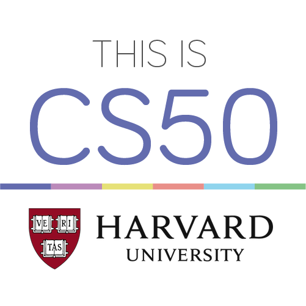
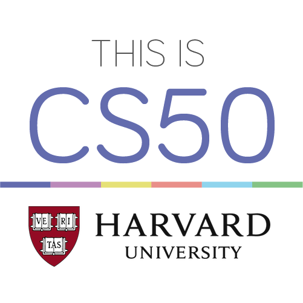

About me
My name is Antonio Corrêa, I'm 18 years old, and I'm currently studying Computer
Science at
the
University of Vila Velha in the 1st period.
During my graduation, I got constructive experiences for my training. I acquired skills such
as
leading
and organizing small groups, proactive posture, etc. I have a professional character and I always try to
help in the areas where I can and learn in the daily environment, whether school or work. I can adapt to
the most diverse environments and I consider myself self-taught.
I'm interested in both front-end and back-end areas, for now I've been specializing in
front-end
focusing on HTML and CSS.
This webpage was fully made by me, using my acquired knowledge on both languages, you can
check the full code here:
My Github repository
My main qualities highlighted for a possible vacancy:
 
